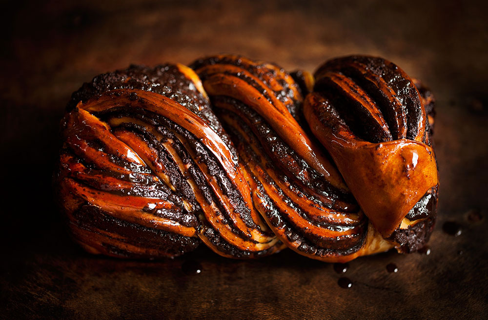
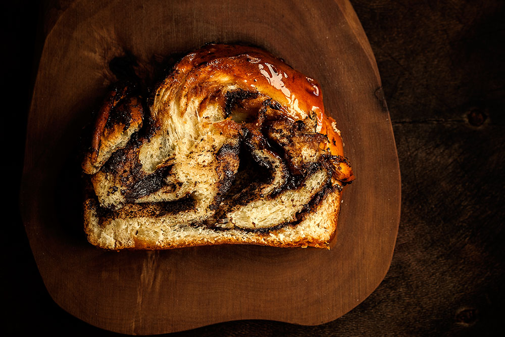
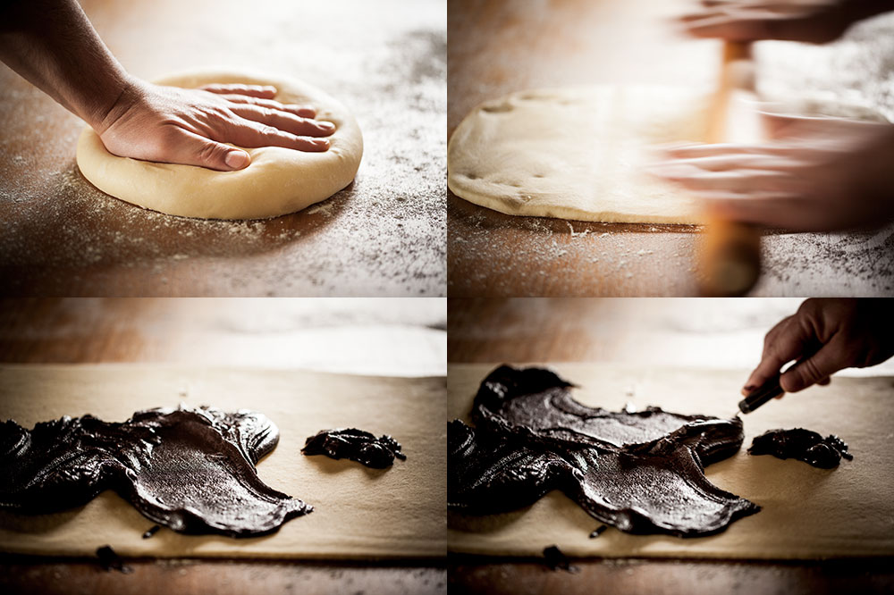
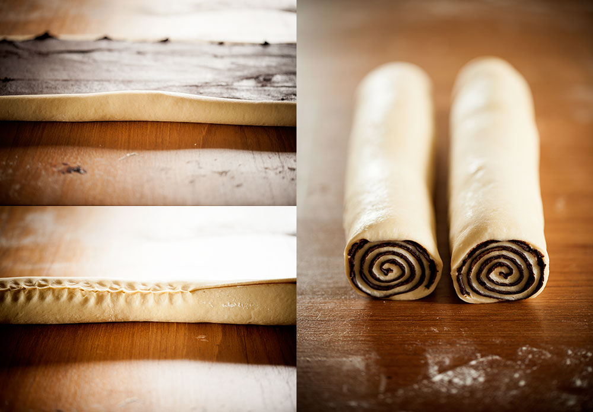
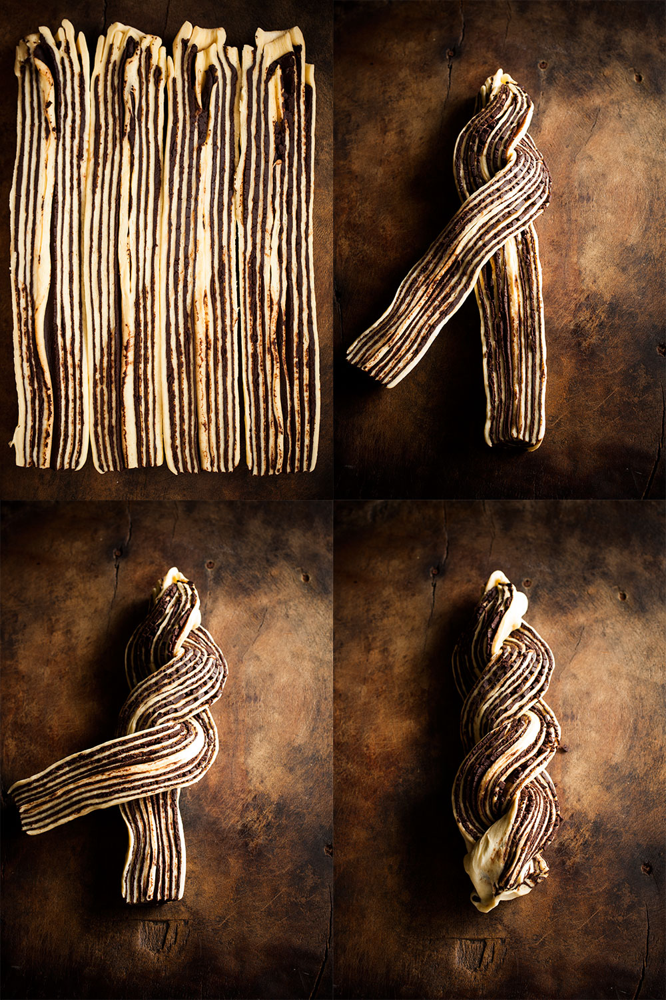
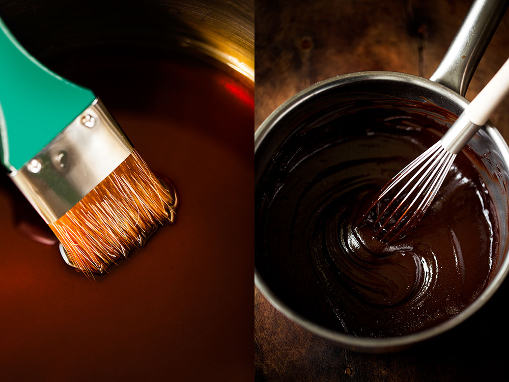
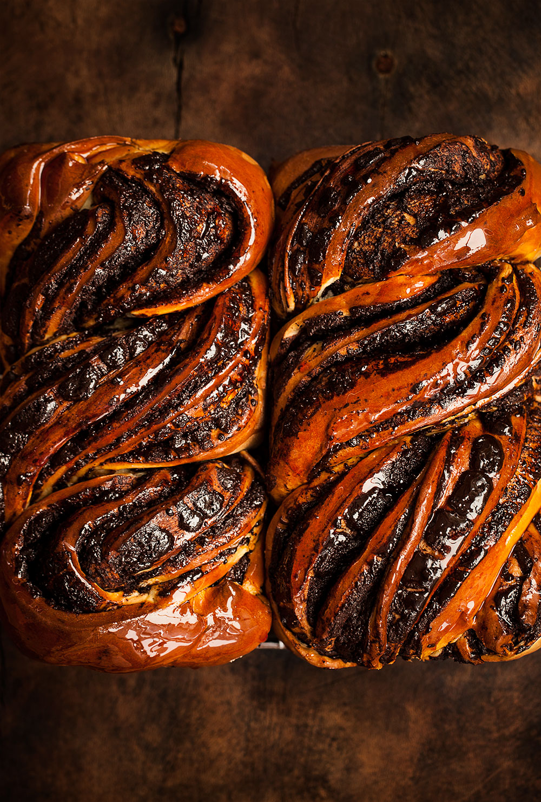
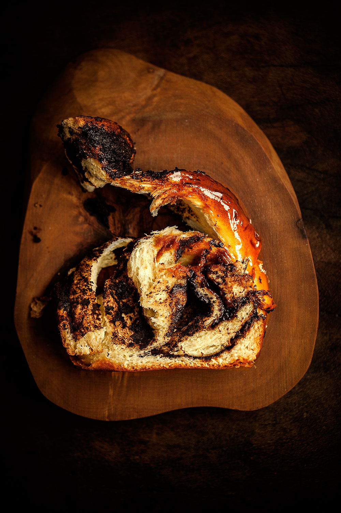

Chocolate Babka
I think it was the first week o the lockdown. My doorbell rang. I hadn’t ordered anything, so I opened the door with caution. Turns out a friend of mine had bought Easter breads (flavored with mastic and mahlab) for her close-knit group of friends from a favorite bakery of mine in İstanbul, called Üstün Palmie. And I was one of those lucky recipients. It came to my door still warm from the bakery and I’ve been obsessed with baking the best version of it at home ever since. More on that later.The obsession started with that bread–actually, sweetened and flavored breads are called çörek (pronounced “chö-wreck”) in Turkey–and continued with this wonderful Chocolate Babka, drenched in a dark caramel syrup.

For those who will be baking a babka for the first time, I highly recommend using a stand mixer. The dough is quite wet and sticky in the beginning and becomes smooth and much easier to work with after a 10-minute beating in the mixer.

Once the dough is done, the rest is a breeze. I chill both the risen dough and the chocolate filling briefly, which makes it much easier to roll out the dough and spread the filling evenly.

Once the logs are done, I prefer to chill them again until firm–this time in the freezer for 5-10 minutes–so that the layers don’t squish when you cut into the logs.

The recipe makes two babkas. One is for you and the other one is for someone who you feel needs some love during these unsettling times. I wish I could have gifted my second babka to my friend who brightened my day with her thoughtful gesture, but as soon as travel restrictions were lifted she took off to her house in Selimiye–a small fishing village located on the mountainous Bozburun Peninsula, where the Mediterranean sea meets the Aegean sea and the days are always bright, with or without a babka.

Classic recipes call for a simple sugar syrup, but I thought why bother with “simple” when you can drench these beauties in dark caramel? Of course I was right. Almost anything in the world is better with caramel.For this syrup, you start by making a dry caramel, which means there’s no need to add water in the beginning. As soon as the sugar turns dark amber brown, you hold the saucepan at arm’s length and add the water. You have to be very carefully–as soon as you add the water, the caramel will bubble up vigorously and hot steam will rise. To avoid any mishap, I recommend adding the water using a soup ladle. This way, your hand won’t get anywhere near the hot steam.Once the caramel syrup has cooled, you brush it generously over the hot babkas. And they look like this:

And then the exhausting wait starts. You must let them cool completely before slicing. It will be hard, but your patience will be richly rewarded.

Enjoy!